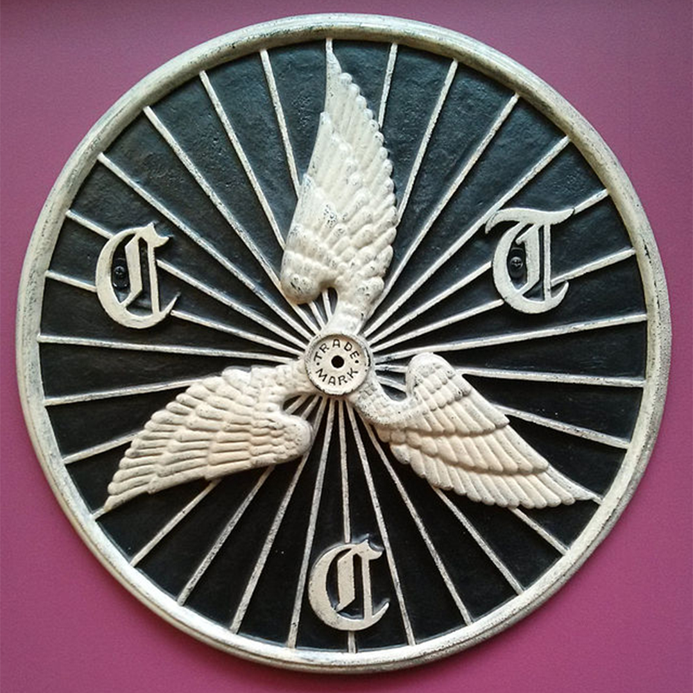
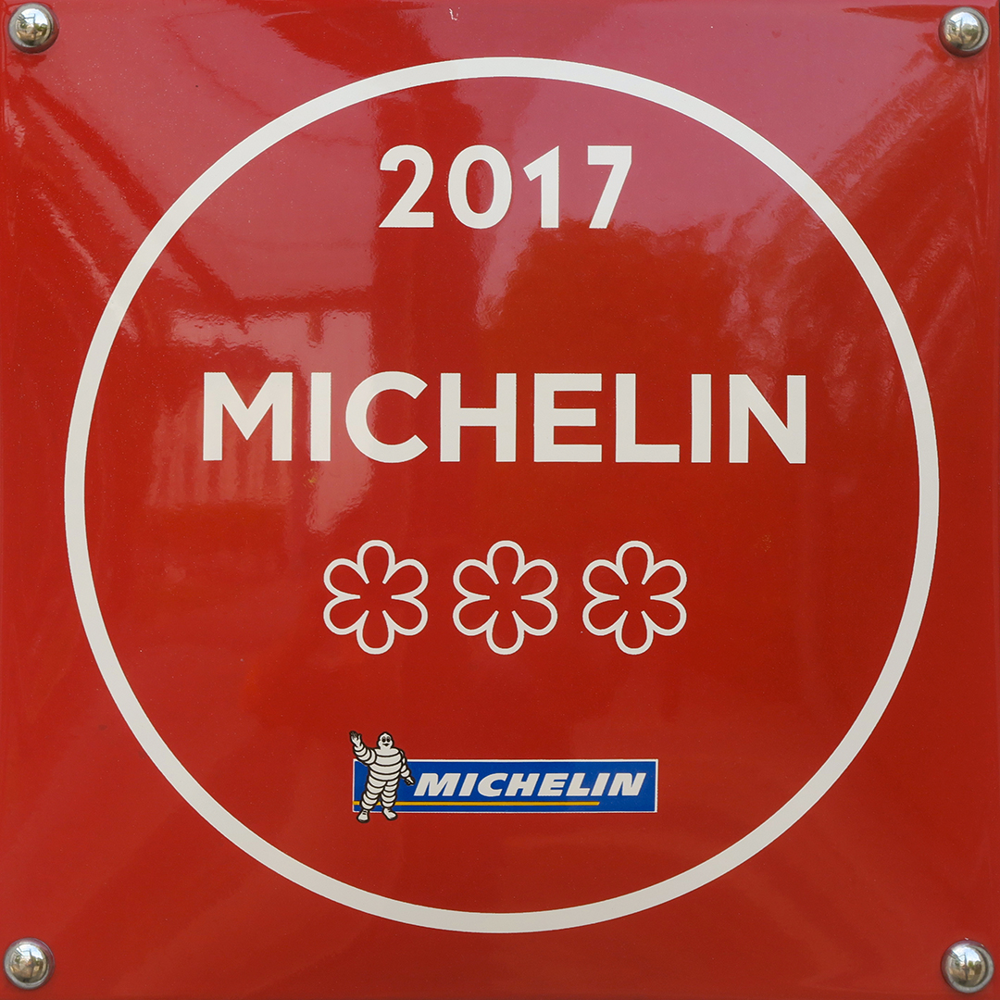

Inspired by the Cycling Touring Club member Kuklos and his remarks as he approached Surfleet “A roadside cottage which displayed the winged wheel tempted me to early tea.”


Cycling when compared with the fry-up presents a converging history framed by the lens of class. The fry-up was first popularised and eaten by the landed gentry in rural Britain, the humble fry up was eaten by those of a very high social class and great wealth. The landed gentry were then replaced by new wealthy businessmen, fuelled by the industrial revolution. The first pennant represents a cafe which is accessible to some cyclists, but not one which fosters a community beyond the simple necessities.
The creation of cycling clubs, exemplified by Birmingham Clarion Cycling Club cemented cycling as a firmly working class sport. Peter Cox describes the cycling club as “necessarily a firmly working class activity contrasted with the (horse) riding of the bourgeoisie.” The cafe is central to this endeavour as can be shown by the popularity of the CTC (Cycling Touring Club) badges that were displayed on the outside of cycling friendly establishments. This second pennant awarded to a cafe shows it’s position as a cycling hub for cyclists to stop to take an early tea.
As the fry-up experienced in the 20th century - with over half the population of the UK consuming a fry-up as their breakfast - so too cycling takes a step forwards by embracing the community spirit. To earn the third pennant a cafe must show true club mentality through holding cycling specific events and offereing a welcoming place to stop and take coffee and cake.
Symbols

The Cycling Touring Club Winged Wheel

The Michelin Star
 and what might come next?
and what might come next?